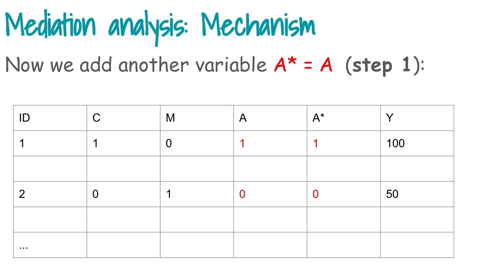
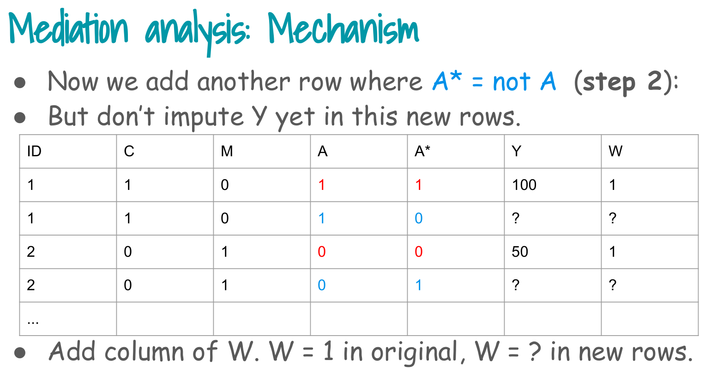
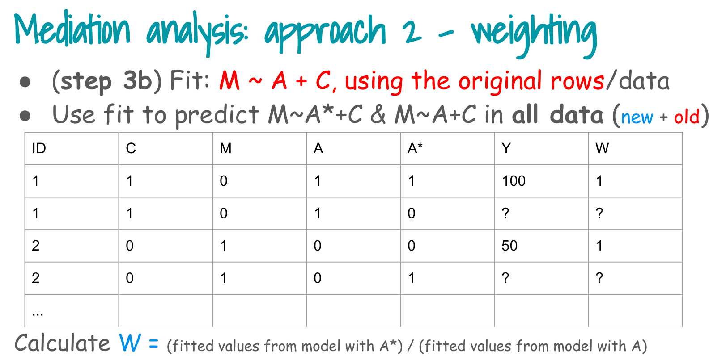

Mediation Software
In this tutorial we:
- Walk through the weighting based mediation mechanism step by step (Steps 0 to 4).
- Implement the manual inverse probability weighting (IPW) approach.
- Fit a causal mediation model with the
regmedintpackage on the same data. - Compare
- natural direct effect (NDE),
- natural indirect effect (NIE),
- total effect (TE), and
- proportion mediated (PM) from the two approaches.
Tip
To focus on mediation ideas, we ignore the complex survey design and sampling weights here.
In a real analysis, at least the outcome model should incorporate survey features (strata, cluster, weights).
Overall Steps
1. Load data and Step 0: build analysis dataset
Step 0 in the slides:
> Include Y, A, M in the data and necessary C.

Here
- A = osteoarthritis (OA) indicator (1 = OA, 0 = non OA)
- M = pain medication indicator
- Y = CVD indicator
- C = age, sex, BMI, SES and comorbidities
# Load the CCHS based dataset
load("Data/mediation/cchs123pain.RData")
# Create 0/1 numeric variables for the mediation analysis
analytic.miss$mediator <- ifelse(analytic.miss$painmed == "Yes", 1, 0)
# pain medication (M)
analytic.miss$exposure <- ifelse(analytic.miss$OA == "OA", 1, 0)
# osteoarthritis (A)
analytic.miss$outcome <- ifelse(analytic.miss$CVD == "event", 1, 0)
# CVD (Y)
# List of baseline covariates (C)
varlist <- c("age", "sex", "income", "race", "bmi", "edu",
"phyact", "smoke", "fruit", "diab")
# Restrict to complete cases
analysis_data <- subset(analytic.miss, miss == 0)
nrow(analysis_data)[1] 28734Short interpretation:
- We have a complete case dataset with binary exposure, mediator and outcome.
- The covariates C will be adjusted for in both the mediator model and the outcome model.
2. Step 1: create auxiliary exposure A* = A (facts)
Step 1 in the slides:
> Replicate exposure A with same exposures A* (“facts”).

We create exposureTemp as the exposure used in the mediator model.
# This corresponds to A* = A for all rows when we fit the mediator model
analysis_data$exposureTemp <- analysis_data$exposure3. Step 2: duplicate data with alternative A* (alternative facts)
Step 2 in the slides:
> Replicate exposure A with alternative exposures A* (“alternative facts”).

We create two copies of each subject:
- One with A* equal to the observed exposure (factual row).
- One with A* equal to the opposite exposure (counterfactual row).
d1 <- d2 <- analysis_data
# Factual copy: A* = A
d1$exposure.counterfactual <- d1$exposure
# Counterfactual copy: A* = 1 - A
d2$exposure.counterfactual <- 1 - d2$exposure
# Stack rows to form an expanded dataset
newd <- rbind(d1, d2)
nrow(analysis_data); nrow(newd)[1] 28734[1] 57468Interpretation:
- Each person now appears twice, once with their observed exposure and once with the opposite exposure encoded in
exposure.counterfactual. - We keep the observed Y and M in both rows for now.
4. Step 3b: weighting via the mediator model
Step 3, weighting branch (Step 3b in the slides):
- Fit the mediator model M ~ A + C on the original data.
- Use that model to predict P(M | A, C) and P(M | A*, C) in the expanded data.
- Construct the mediator weight W^M = P(M | A*, C) / P(M | A, C).

We ignore survey weights here to keep the focus on the mediation mechanism.
# Build mediator model formula: M ~ A + C
covariates_formula <- paste(varlist, collapse = " + ")
mediator_formula_str <- paste("mediator ~ exposureTemp +", covariates_formula)
mediator_formula <- as.formula(mediator_formula_str)
# Fit mediator model on complete cases
fit_mediator <- glm(mediator_formula,
data = analysis_data,
family = binomial)
summary(fit_mediator)$coefficients["exposureTemp", ] Estimate Std. Error z value Pr(>|z|)
9.157724e-01 5.383572e-02 1.701050e+01 6.864990e-65 Interpretation:
- The coefficient of
exposureTempis the log odds ratio for OA compared with non OA on pain medication use, adjusting for C. - A positive and significant coefficient indicates the A to M path is present in the data.
Now compute the mediator weights for each row in the expanded dataset.
# Step 3b: compute P(M | A, C)
newd$exposureTemp <- newd$exposure
p_M_given_A <- predict(fit_mediator, newdata = newd, type = "response")
prob_M_given_A <- ifelse(newd$mediator == 1, p_M_given_A, 1 - p_M_given_A)
# Step 3b: compute P(M | A*, C)
newd$exposureTemp <- newd$exposure.counterfactual
p_M_given_Astar <- predict(fit_mediator, newdata = newd, type = "response")
prob_M_given_Astar <- ifelse(newd$mediator == 1, p_M_given_Astar, 1 - p_M_given_Astar)
# Mediator weights W^M = P(M | A*, C) / P(M | A, C)
newd$W.mediator <- prob_M_given_Astar / prob_M_given_A
summary(newd$W.mediator) Min. 1st Qu. Median Mean 3rd Qu. Max.
0.4339 1.0000 1.0000 1.0001 1.1404 2.2960 Interpretation:
- If the mediator is more compatible with the counterfactual exposure than with the observed exposure, W.mediator > 1.
- These weights reconstruct the counterfactual mediator distribution we need to identify natural direct and indirect effects.
5. Step 4b: weighted outcome model
Step 4, weighting branch (Step 4b in the slides):
Fit outcome model Y ~ A + A* + C using the mediator weights as model weights.
The coefficient of A is the natural direct effect, and the coefficient of A* is the natural indirect effect.

We fit
logit P(Y = 1 | A, A, C) = theta0 + theta1 A + theta2 A + theta3 C
with weights W.mediator.
outcome_formula_str <- paste("outcome ~ exposure + exposure.counterfactual +",
covariates_formula)
outcome_formula <- as.formula(outcome_formula_str)
fit_outcome <- glm(outcome_formula,
data = newd,
family = binomial,
weights = W.mediator)Warning in eval(family$initialize): non-integer #successes in a binomial glm!summary(fit_outcome)$coefficients[c("exposure", "exposure.counterfactual"), ] Estimate Std. Error z value Pr(>|z|)
exposure 0.38200076 0.05074033 7.528543 5.130973e-14
exposure.counterfactual 0.07460393 0.04211051 1.771623 7.645719e-02Interpretation:
exposurecoefficient (theta1) represents the natural direct effect on the log odds ratio scale, holding the mediator path fixed.exposure.counterfactualcoefficient (theta2) represents the natural indirect effect on the log odds ratio scale, comparing mediator paths while holding exposure fixed.
6. Natural effects and proportion mediated from the manual model
From the fitted coefficients:
- NDE log OR = coefficient of
exposure - NIE log OR = coefficient of
exposure.counterfactual - TE log OR = NDE log OR + NIE log OR
- PM = NIE log OR / TE log OR

coefs <- summary(fit_outcome)$coefficients
nde_log_or <- coefs["exposure", "Estimate"]
nie_log_or <- coefs["exposure.counterfactual", "Estimate"]
nde_or <- exp(nde_log_or)
nie_or <- exp(nie_log_or)
te_or <- exp(nde_log_or + nie_log_or)
pm_manual <- nie_log_or / (nde_log_or + nie_log_or)
manual_results <- data.frame(
Method = "Manual IPW (weights, no survey design)",
TE = te_or,
NDE = nde_or,
NIE = nie_or,
PM = pm_manual
)
manual_results Method TE NDE NIE PM
1 Manual IPW (weights, no survey design) 1.578705 1.465213 1.077457 0.1633885Short interpretation:
- TE is the total effect of OA on CVD combining direct and mediated paths.
- NDE is the effect of OA on CVD not operating through pain medication.
- NIE is the effect of OA on CVD that is transmitted through pain medication.
- PM is the proportion of the log odds ratio that is mediated via pain medication.
7. regmedint: software based mediation
One useful package is regmedint, which implements counterfactual mediation estimands such as NDE, NIE, and TE for generalized linear models.
Here we fit a regmedint model using the same exposure, mediator, outcome and covariates, again ignoring the survey design to keep the comparison simple.
7.1 Numeric covariates and covariate profile
regmedint expects numeric covariates and a numeric vector c_cond that defines the covariate profile at which effects are evaluated.
We recode factors to numeric codes and set c_cond equal to the mean of each numeric covariate.
analysis_data$age_num <- as.numeric(analysis_data$age)
analysis_data$sex_num <- as.numeric(analysis_data$sex)
analysis_data$income_num <- as.numeric(analysis_data$income)
analysis_data$race_num <- as.numeric(analysis_data$race)
analysis_data$bmi_num <- as.numeric(analysis_data$bmi)
analysis_data$edu_num <- as.numeric(analysis_data$edu)
analysis_data$phyact_num <- as.numeric(analysis_data$phyact)
analysis_data$smoke_num <- as.numeric(analysis_data$smoke)
analysis_data$fruit_num <- as.numeric(analysis_data$fruit)
analysis_data$diab_num <- as.numeric(analysis_data$diab)
cvar_num <- c("age_num","sex_num","income_num","race_num","bmi_num",
"edu_num","phyact_num","smoke_num","fruit_num","diab_num")
c_cond_vec <- colMeans(analysis_data[, cvar_num])
c_cond_vec age_num sex_num income_num race_num bmi_num edu_num phyact_num
3.049976 1.481868 2.584708 1.884701 2.489037 3.031565 1.996485
smoke_num fruit_num diab_num
2.123303 1.973063 1.043085 m_cde_vec <- 0
a0_vec <- 0
a1_vec <- 1 7.2 Fit regmedint model
We specify:
- logistic regression for Y given A, M and C
- logistic regression for M given A and C
- no exposure by mediator interaction
- a0 = 0 and a1 = 1 for the exposure contrast
- mediator fixed at 0 for the controlled direct effect value
fit_reg <- regmedint(
data = analysis_data,
yvar = "outcome",
avar = "exposure",
mvar = "mediator",
cvar = cvar_num,
yreg = "logistic",
mreg = "logistic",
interaction = FALSE,
a0 = a0_vec,
a1 = a1_vec,
m_cde = m_cde_vec,
c_cond = c_cond_vec
)
summary(fit_reg)### Mediator model
Call:
glm(formula = mediator ~ exposure + age_num + sex_num + income_num +
race_num + bmi_num + edu_num + phyact_num + smoke_num + fruit_num +
diab_num, family = binomial(link = "logit"), data = data)
Coefficients:
Estimate Std. Error z value Pr(>|z|)
(Intercept) 0.12698 0.13687 0.928 0.353553
exposure 0.90432 0.05359 16.875 < 2e-16 ***
age_num -0.14602 0.00984 -14.840 < 2e-16 ***
sex_num -0.67976 0.02829 -24.026 < 2e-16 ***
income_num 0.06704 0.01276 5.253 1.49e-07 ***
race_num 0.58025 0.03987 14.555 < 2e-16 ***
bmi_num 0.17380 0.02547 6.825 8.80e-12 ***
edu_num 0.03432 0.01184 2.898 0.003761 **
phyact_num 0.06642 0.01855 3.580 0.000343 ***
smoke_num 0.12872 0.01617 7.960 1.73e-15 ***
fruit_num -0.09609 0.01940 -4.952 7.35e-07 ***
diab_num 0.15272 0.06827 2.237 0.025284 *
---
Signif. codes: 0 '***' 0.001 '**' 0.01 '*' 0.05 '.' 0.1 ' ' 1
(Dispersion parameter for binomial family taken to be 1)
Null deviance: 34585 on 28733 degrees of freedom
Residual deviance: 33109 on 28722 degrees of freedom
AIC: 33133
Number of Fisher Scoring iterations: 4
### Outcome model
Call:
glm(formula = outcome ~ exposure + mediator + age_num + sex_num +
income_num + race_num + bmi_num + edu_num + phyact_num +
smoke_num + fruit_num + diab_num, family = binomial(link = "logit"),
data = data)
Coefficients:
Estimate Std. Error z value Pr(>|z|)
(Intercept) -7.93326 0.35098 -22.603 < 2e-16 ***
exposure 0.36176 0.07276 4.972 6.63e-07 ***
mediator 0.51453 0.07353 6.998 2.61e-12 ***
age_num 0.68044 0.02435 27.943 < 2e-16 ***
sex_num 0.35919 0.06516 5.512 3.55e-08 ***
income_num -0.19520 0.03140 -6.217 5.07e-10 ***
race_num 0.25498 0.12257 2.080 0.03749 *
bmi_num 0.08491 0.05898 1.440 0.14997
edu_num -0.07793 0.02472 -3.153 0.00162 **
phyact_num 0.04941 0.04272 1.157 0.24742
smoke_num 0.11605 0.03708 3.129 0.00175 **
fruit_num 0.04256 0.04512 0.943 0.34549
diab_num 0.72406 0.09020 8.027 9.97e-16 ***
---
Signif. codes: 0 '***' 0.001 '**' 0.01 '*' 0.05 '.' 0.1 ' ' 1
(Dispersion parameter for binomial family taken to be 1)
Null deviance: 10460.7 on 28733 degrees of freedom
Residual deviance: 8527.2 on 28721 degrees of freedom
AIC: 8553.2
Number of Fisher Scoring iterations: 7
### Mediation analysis
est se Z p lower upper
cde 0.36175669 0.072758891 4.971993 6.626815e-07 0.21915188 0.5043615
pnde 0.36175669 0.072758891 4.971993 6.626815e-07 0.21915188 0.5043615
tnie 0.06702148 0.008626136 7.769584 7.771561e-15 0.05011457 0.0839284
tnde 0.36175669 0.072758891 4.971993 6.626815e-07 0.21915188 0.5043615
pnie 0.06702148 0.008626136 7.769584 7.771561e-15 0.05011457 0.0839284
te 0.42877817 0.072048448 5.951248 2.661058e-09 0.28756581 0.5699905
pm 0.18590681 0.034462107 5.394528 6.870383e-08 0.11836232 0.2534513
Evaluated at:
avar: exposure
a1 (intervened value of avar) = 1
a0 (reference value of avar) = 0
mvar: mediator
m_cde (intervend value of mvar for cde) = 0
cvar: age_num sex_num income_num race_num bmi_num edu_num phyact_num smoke_num fruit_num diab_num
c_cond (covariate vector value) = 3.049976 1.481868 2.584708 1.884701 2.489037 3.031565 1.996485 2.123303 1.973063 1.043085
Note that effect estimates do not vary over m_cde and c_cond values when interaction = FALSE.From the summary table we extract:
- tnde (total natural direct effect) on the log scale
- tnie (total natural indirect effect) on the log scale
- te (total effect) on the log scale
- pm (proportion mediated) as a proportion on the log odds ratio scale
7.3 How regmedint computes standard errors

regmedint does not use bootstrap resampling by default. The package computes all standard errors through the multivariate delta method based on the estimated covariance matrix of the outcome and mediator models.
After fitting the outcome model (yreg) and mediator model (mreg), the package forms a joint parameter vector \(\theta = (\beta, \gamma)\) and obtains its covariance matrix \(\widehat{\Sigma} = \operatorname{Var}(\theta)\) from the fitted GLMs (these are model-based SEs, not survey-robust).
Each natural effect, such as the total natural direct effect (tnde), total natural indirect effect (tnie), total effect (te), and proportion mediated (pm), is a smooth function of all components of ().
regmedint computes their gradients internally and applies \(\operatorname{se}(\psi) \;=\; \sqrt{ G^\top \,\widehat{\Sigma}\, G }\) where \(G\) is the gradient of the effect \(\psi\) with respect to all parameters. This is implemented directly inside se_fun(), which evaluate the delta–method variance for each estimand.
est <- fit_reg$myreg$est_fun(a0_vec, a1_vec, m_cde_vec, c_cond_vec)
se <- fit_reg$myreg$se_fun(a0_vec, a1_vec, m_cde_vec, c_cond_vec)
reg_raw <- data.frame(
effect = names(est),
est = as.numeric(est),
se = as.numeric(se)
)
reg_raw$lower <- reg_raw$est - 1.96 * reg_raw$se
reg_raw$upper <- reg_raw$est + 1.96 * reg_raw$se
reg_or <- subset(reg_raw, effect %in% c("te","tnde","tnie"))
reg_or$OR <- exp(reg_or$est)
reg_or$OR_L <- exp(reg_or$lower)
reg_or$OR_U <- exp(reg_or$upper)
reg_or effect est se lower upper OR OR_L
3 tnie 0.06702148 0.008626136 0.05011426 0.08392871 1.069318 1.051391
4 tnde 0.36175669 0.072758891 0.21914926 0.50436411 1.435850 1.245017
6 te 0.42877817 0.072048448 0.28756321 0.56999313 1.535380 1.333175
OR_U
3 1.087551
4 1.655932
6 1.768255# Extract ORs from regmedint output already computed as reg_or
tnde_or_reg <- reg_or$OR[reg_or$effect == "tnde"]
tnie_or_reg <- reg_or$OR[reg_or$effect == "tnie"]
te_or_reg <- reg_or$OR[reg_or$effect == "te"]
pm_reg <- est["pm"]
# Combine into regmedint row
regmedint_results <- data.frame(
Method = "regmedint (no survey design)",
TE = te_or_reg,
NDE = tnde_or_reg,
NIE = tnie_or_reg,
PM = pm_reg
)Interpretation:
regmedintuses parametric standardisation based on the fitted outcome and mediator models.- Effects are evaluated at the mean covariate profile
c_cond_vec, not over the full covariate distribution, but this is close enough for comparison with the IPW based approach.
8. Comparison table and brief interpretation
8.1 Combine and display results
## Build tidy table from manual + regmedint
# 1. Expand manual results into long form with NA SE/CI
manual_long <- data.frame(
Method = "Manual IPW (weights, no survey design)",
Effect = c("TE", "NDE", "NIE", "PM"),
est = c(manual_results$TE,
manual_results$NDE,
manual_results$NIE,
manual_results$PM),
se = NA,
lower = NA,
upper = NA
)
# 2. Extract regmedint effects with SE and CI
reg_long <- rbind(
data.frame(Method = "regmedint (no survey design)",
Effect = "TE",
est = reg_or$OR[reg_or$effect == "te"],
se = reg_or$se[reg_or$effect == "te"],
lower = reg_or$OR_L[reg_or$effect == "te"],
upper = reg_or$OR_U[reg_or$effect == "te"]),
data.frame(Method = "regmedint (no survey design)",
Effect = "NDE",
est = reg_or$OR[reg_or$effect == "tnde"],
se = reg_or$se[reg_or$effect == "tnde"],
lower = reg_or$OR_L[reg_or$effect == "tnde"],
upper = reg_or$OR_U[reg_or$effect == "tnde"]),
data.frame(Method = "regmedint (no survey design)",
Effect = "NIE",
est = reg_or$OR[reg_or$effect == "tnie"],
se = reg_or$se[reg_or$effect == "tnie"],
lower = reg_or$OR_L[reg_or$effect == "tnie"],
upper = reg_or$OR_U[reg_or$effect == "tnie"]),
data.frame(Method = "regmedint (no survey design)",
Effect = "PM",
est = est["pm"],
se = se["se_pm"],
lower = est["pm"] - 1.96 * se["se_pm"],
upper = est["pm"] + 1.96 * se["se_pm"])
)
# 3. Combine
compare_full <- rbind(manual_long, reg_long)
rownames(compare_full) <- NULL
# 4. Pretty table
library(kableExtra)
kable(compare_full, digits = 2,
caption = "Comparison of natural effects with standard errors and confidence intervals") %>%
kable_styling(full_width = FALSE,
bootstrap_options = c("striped", "condensed"))| Method | Effect | est | se | lower | upper |
|---|---|---|---|---|---|
| Manual IPW (weights, no survey design) | TE | 1.58 | NA | NA | NA |
| Manual IPW (weights, no survey design) | NDE | 1.47 | NA | NA | NA |
| Manual IPW (weights, no survey design) | NIE | 1.08 | NA | NA | NA |
| Manual IPW (weights, no survey design) | PM | 0.16 | NA | NA | NA |
| regmedint (no survey design) | TE | 1.54 | 0.07 | 1.33 | 1.77 |
| regmedint (no survey design) | NDE | 1.44 | 0.07 | 1.25 | 1.66 |
| regmedint (no survey design) | NIE | 1.07 | 0.01 | 1.05 | 1.09 |
| regmedint (no survey design) | PM | 0.19 | 0.03 | 0.12 | 0.25 |
8.2 Plot results

8.3 Interpretation
- Both approaches agree that osteoarthritis is associated with increased odds of CVD, with a total effect odds ratio around 1.5 to 1.6.
- The natural direct effect is larger than the natural indirect effect in both approaches, indicating that most of the effect is not mediated by pain medication.
- The natural indirect effect is modest but greater than one in both approaches, suggesting that some of the OA to CVD association is transmitted through pain medication.
- The proportion mediated on the log odds ratio scale is of similar magnitude across methods (roughly 15 to 20 percent).
Some differences between the manual and regmedint estimates are expected.
- The manual calculation relies on an IPW-based decomposition using fitted models that approximate counterfactual contrasts, while
regmedintuses fully parametric standardization, integrating over the outcome and mediator models at the chosen covariate profile. - IPW and parametric g-formula methods target the same estimands but use different estimating equations and weighting structures, so their results will not match exactly unless models are perfectly specified.
regmedintevaluates effects at the mean covariate vector rather than averaging over the full empirical covariate distribution, which can introduce small discrepancies compared with the manual implementation.
Tip
Because we intentionally ignore survey design features in both implementations, these results are meant primarily to illustrate the mediation mechanisms and the comparability between a manual implementation and a software package. For final substantive inference, survey design and sampling weights should be incorporated as described in the lecture notes.